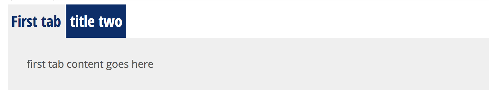
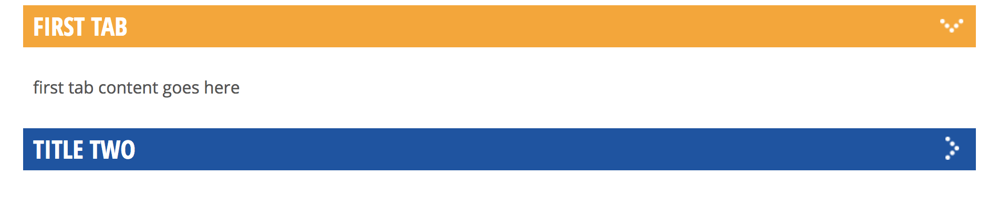
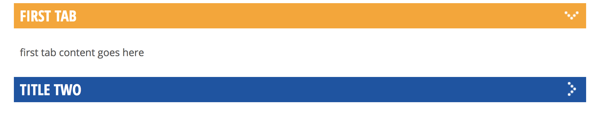

Create and place a Tabbed Accordion
- Version: 1.0
- Created: 12/20/2018 KLM
- Last Updated: 12/20/2018
- Intended Audience: UCOM
Summary
Tabbed accordion means that the content can be entered and displayed as side tab, top tab or accordion.

 

Prerequisites
- access to subdomain
- content for tabs/accordions
- Determination if should be tabs or accordions
Procedure
- Login to subdomain
- content > add content > tabbed accordion
- Fill out content
a. Display Type required
- accordion, side tab, top tab b. Title
- Administrative title, recomended to label display type - csubject for example Top Tabs - Degree options c. Content i. Title - what shows on tab or accordion bar ii. body - content within tab or accordion
- add accordion/tab item, and fill out information as many times as needed
- click save
See Also
- thing 1
- thing 2
Keywords
- this word is key